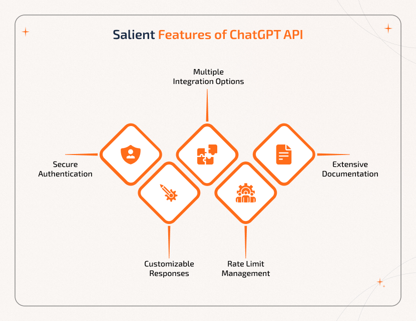
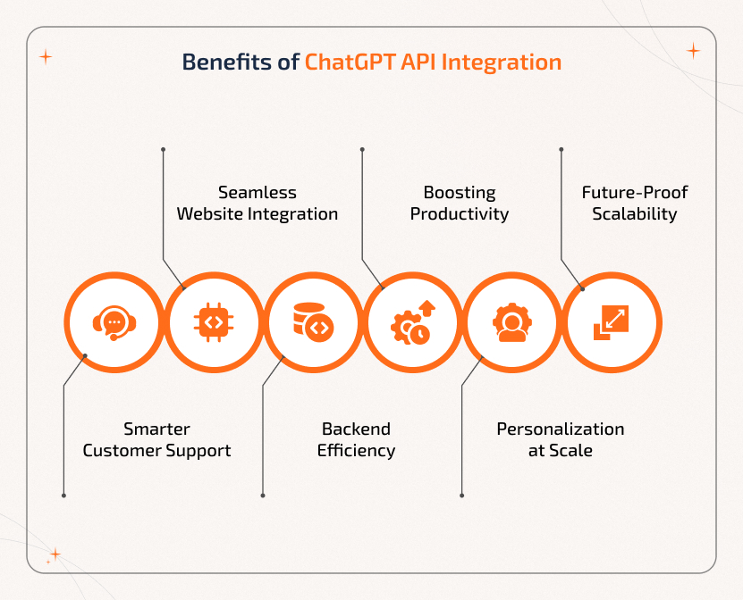
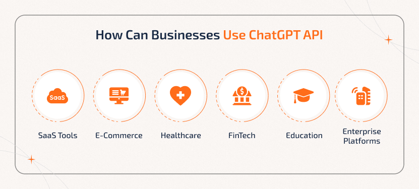
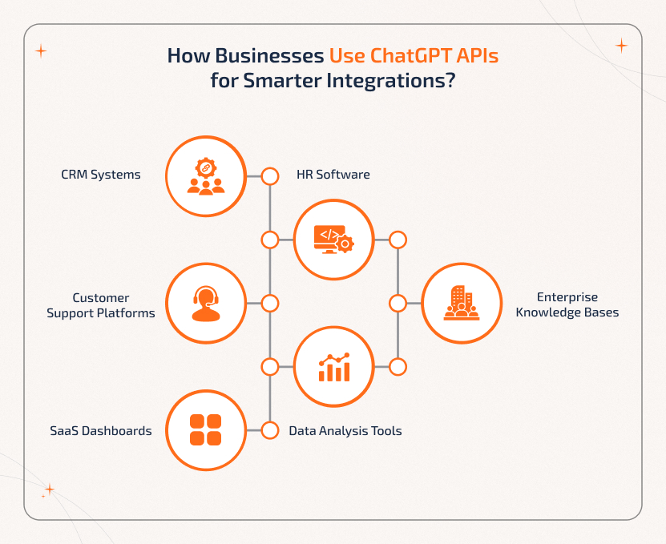
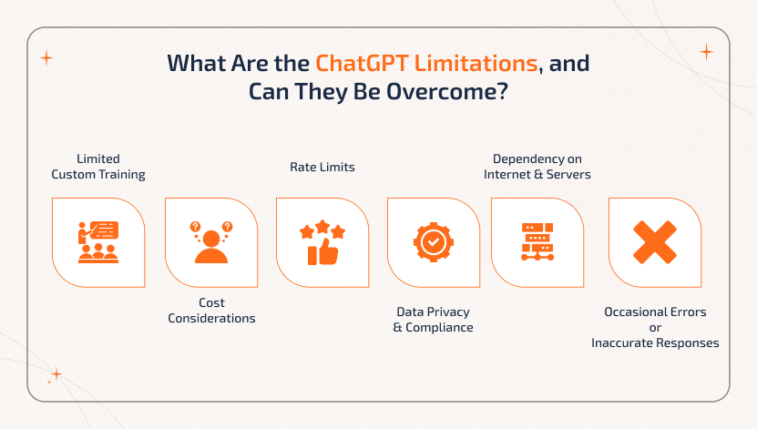
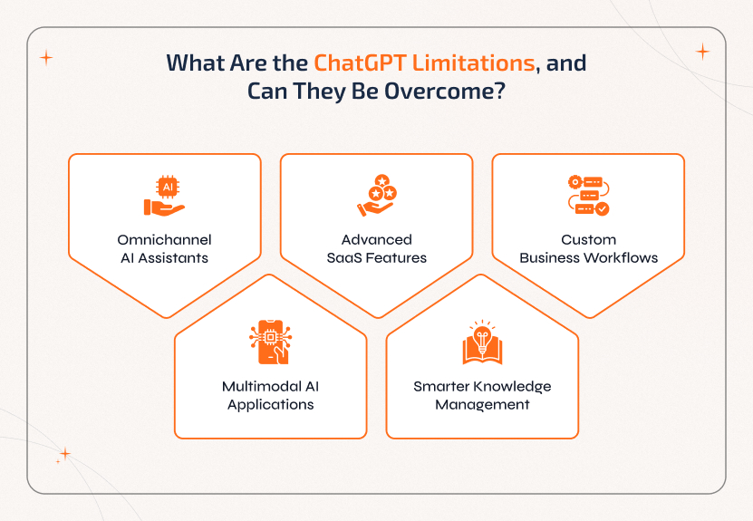

Today, Artificial Intelligence has evolved from just being a concept into a practical tool that is powering businesses, apps, and customer experiences. Among all the innovations, ChatGPT is the most impactful technology developed by OpenAI. While millions of users access ChatGPT via its web interface, the real power lies in its ChatGPT API integration . With this, businesses and developers can integrate conversational AI into their systems, websites, and SaaS applications directly.
Through OpenAI API integration, it is possible to automate workflows, build intelligent chatbots, and even develop new AI-powered products. The integration possibilities are endless, covering everything from ChatGPT API usage in backend systems to customer-facing applications and more. Here in this blog, you will get to know everything from setup to implementation, best practices, business applications, and more.
What is ChatGPT API Integration?
ChatGPT API integration is all about connecting your app, website, or platform to OpenAI's powerful assistant API. Instead of only interacting with ChatGPT on OpenAI's site, it is possible to embed its capabilities within your product. This opens up real-time responses to user queries, dynamic content generation, and automated support functions.
It is possible to exchange information between your system and the ChatGPT model with the help of OpenAI API authentication. Developers can send prompts to the API/GPT API request and receive structured results/GPT API response, which is formatted as JSON for easy processing.
Whether it is about backend integration, mobile apps, or SaaS products, ChatGPT APIs offer AI-driven automation and customer engagement at scale.
Understanding OpenAI API Integration
It is essential to understand OpenAI API integration as a whole before getting into ChatGPT-specific implementations. OpenAI offers a range of APIs such as GPT models for natural language processing, DALL-E for image generation, Embeddings for semantic search & clustering, and Whisper for speech recognition. By integrating the OpenAI assistant API, you are enabling your software to talk to these AI models.
The key elements of OpenAI integration are as follows :
- Authentication with API keys.
- Endpoint access that covers chat completions or embeddings.
- Handling the OpenAI API response format.
- Managing ChatGPT API rate limits.
For businesses, this integration is not just technical. Rather, it is the ability to build products that can think, respond, and adapt to user needs.
Salient Features of ChatGPT API
The ChatGPT API for developers comes with powerful features that ensure flexibility, security, and scalability for modern applications

Protect system access with OpenAI API authentication and robust key management.
Generate everything from quick answers to long-form content using the OpenAI API response format.
ChatGPT API can easily be integrated across websites, mobile apps, SaaS platforms, or REST APIs.
Leverage built-in controls to manage ChatGPT API rate limits according to usage tiers.
Access the OpenAI ChatGPT documentation with quick-start guides and advanced tutorials for seamless adoption.
These features make ChatGPT backend integration ideal for startups, enterprises, and SaaS providers aiming to scale with AI-driven solutions.
Benefits of ChatGPT API Integration
ChatGPT API integration goes beyond adding AI—it reshapes how businesses communicate, operate, and grow. Key benefits include

Automate FAQs, speed up responses, and provide 24/7 assistance - making ChatGPT API for SaaS apps and e-commerce a game-changer.
It is possible to connect website with ChatGPT and help customers interact naturally without constant human support
Streamline workflows with ChatGPT backend integration, automating reports, data classification, and email drafting.
Free teams from repetitive work, empowering them to focus on innovation and strategic growth powered by GPT API usage.
Deliver AI-powered recommendations and insights using the OpenAI assistant API, tailored to every user.
Stay ahead with ChatGPT 4 API integration, ensuring your systems adapt to evolving AI capabilities without major overhauls.
These ChatGPT API integration capabilities are redefining the way digital platforms communicate and scale.
With ChatGPT API integration, you can automate workflows, scale customer support & enhance your SaaS apps.
How Can ChatGPT API for Business Be Used?
If you're wondering how to use ChatGPT APIs in practical business scenarios, the the possibilities span across industries and workflows. Here are some practical applications:

Supercharge SaaS platforms with ChatGPT API for SaaS apps—enabling smart ticketing, task automation, and intelligent knowledge bases.
Deliver personalized shopping journeys with ChatGPT API integration, offering conversational product recommendations and 24/7 support.
Simplify patient intake and symptom checking by embedding REST API with ChatGPT into care unit workflows.
Automate KYC verification, FAQs, and personalized financial planning with secure ChatGPT integration.
Build virtual tutors and interactive learning platforms using apps powered by ChatGPT API.
Integrate the OpenAI assistant API into CRMs, HR systems, and project management tools for smarter enterprise workflows.
By embedding conversational AI or ChatGPT in business operations, companies not only reduce costs but also gain a competitive advantage in their industry.
Building Intelligent Applications Using ChatGPT API.
The future of applications is conversational—and the ChatGPT API empowers businesses to build AI-first apps with advanced natural language capabilities. With ChatGPT API integration, businesses unlock smarter, more engaging user experiences at scale.
- Mobile Apps: Create voice-driven personal assistants capable of scheduling, reminders, and everyday query handling.
- SaaS Platforms: Streamline customer support with GPT-powered workflows for automated ticket triaging and faster response generation.
- Enterprise Systems: Deploy ChatGPT in backend processes for document classification, compliance reporting, and enterprise knowledge management.
Most developers start with a simple GPT API Python prototype before scaling into production-ready deployments. This approach reduces the complexity of natural language processing, accelerates development cycles, and shortens time-to-market for innovative products.
How to Get Your ChatGPT API Key.
Before you can start ChatGPT development, you need to generate and configure your OpenAI API key. This step is essential for secure access and smooth integration.
1. Create an OpenAI Account – Sign up on the official OpenAI website.
2. Generate Your API Key – Go to the developer dashboard and create a new key for your projects.
3. Store It Securely – Never hardcode the key into client-side code; instead, use environment variables or a secrets manager.
4. Authenticate Your First Request – Pass the key in your request headers to test OpenAI API authentication.
Once your key is ready, you can begin experimenting with endpoints, running test requests, and exploring the OpenAI ChatGPT documentation for advanced features.
How to Integrate ChatGPT Using API
ChatGPT integration into your app is simple and straightforward. Given below is the step-by-step workflow developers usually follow:
Begin by choosing your stack, either Python or Node.js, and ensure it is installed on your system.
For Python:
pip install openai
For Node.js:
npm install openai
Keep your API key secure by storing it in an environment variable.
python
import openai
openai.api_key = "your_api_key_here"javascript
import OpenAI from "openai";
const client = new OpenAI({apikey:process.env.OPENAI_API_KEY});python
response = openai.ChatCompletion.create(
model="gpt-4",
messages=[{"role": "user", "content": "Hello, can you help me?"}]
)
print(response.choices[0].message["content"]);python
const response = await client.chat.completions.create({
model: "gpt-4",
messages: [{ role: "user", content: "Hello, can you help me?" }],
});
console.log(response.choices[0].message.content);Integrate the returned output into your app for chatbots, customer support, and content generation or automation.
We provide step-by-step ChatGPT API integration services, from API key setup to backend scaling.
ChatGPT Endpoint Example & Tutorials
When integrating ChatGPT into your application, the endpoint acts as the bridge between your app and the API. A standard request looks like this:
POST https://api.openai.com/v1/chat/completions
- model – e.g., "gpt-4" for the latest generation.
- messages – an array of user, system, or assistant messages that define the conversation.
- temperature – controls creativity; lower values = precise outputs, higher values = diverse responses.
To get started quickly, the OpenAI ChatGPT documentation provides official examples. Beyond this, developers can explore community-driven tutorials that demonstrate real-world integrations like:
- Slack or Microsoft Teams bots
- SaaS workflow automation
- AI-powered customer support assistants
- Intelligent content generation tools
With these resources, developers can move from a simple test request to building production-ready, conversational applications.Thus, this section helps developers understand how to use ChatGPT APIs effectively with real integration patterns.
ChatGPT API Pricing & Cost Breakdown
Just before opting for ChatGPT API integration, it is vital to understand token-based pricing. i.e., OpenAI charges based on model type, response size, and prompt length, which are measured in tokens, roughly 4 characters in English.
Check out the factors that influence the pricing:
- Conversation length.
- Model chosen (GPT-3.5 vs GPT-4).
- Input vs output token usage.
- API rate optimization and caching.
By following proper optimization, ChatGPT API pricing stays flexible and scalable for start-ups and enterprises.
Business Cost Scenarios:
| Solution Type | Model Suggestion | Monthly Cost Range | Who Is It For? |
|---|---|---|---|
| Smart Helpdesk Chatbot | GPT-3.5 + GPT-4 fallback | $100–$300 | SaaS & eCommerce |
| AI Knowledge Automation | GPT-4 | $300–$1,200 | Enterprises |
| Mobile App with AI Assistant | GPT-3.5 | $50–$150 | Startups & Consumer Apps |
At Sparkout, we reduce your API cost by up to 40%. Our experts optimize prompt engineering, response trimming, token caching, and hybrid model execution. So, you will get better results but a lower bill.
What Are the Tech Requirements for Implementation?
It is vital to set up your environment with the right technical setup before moving ChatGPT API integration into production. Meeting these requirements will ensure smooth performance, secure operations, and scalability.
A reliable server or cloud platform (AWS, Azure, GCP) is required for handling multiple or concurrent requests. This is required if high traffic is expected from the app.
ChatGPT API works with multiple languages. However, Python and Node.js are the most common ones. So, starting with a GPT API Python example will make the development more approachable.
It is vital to install official SDKs or trusted community libraries to make it easy to handle request/response handling, reduce boilerplate, and accelerate integration.
Storing API keys in environment variables or a secrets manager is the best option. Proper API authentication will keep your integration safe from being exposed.
It is good to implement monitoring to track request volume, latency, and errors. Since ChatGPT API rate limits apply, logging helps prevent disruptions.
When it comes to regulated industries like finance, healthcare, etc., it is important to ensure the integration follows privacy frameworks like GDPR or HIPAA when handling API responses.
How to Handle ChatGPT API Rate Limits – Best Practices
One of the most common challenges in ChatGPT API usage is rate limits—the maximum requests allowed per minute or day, depending on your subscription plan.
- Server Protection – Prevents overload of OpenAI infrastructure.
- Fair Usage – Ensures balanced access for all developers.
- Cost Efficiency – Encourages optimized API calls instead of redundant requests.
1. Batch Requests – Combine multiple related queries into one request.
2. Cache Responses – Reuse frequent results (FAQs, templates) instead of making duplicate calls.
3. Monitor Usage – Implement logging to track where requests peak.
4. Exponential Backoff – Retry failed calls gradually instead of flooding the API.
5. Optimize Prompts – Refine inputs to generate more complete responses in fewer calls.
By following these practices, businesses can maintain stable, scalable, and cost-efficient ChatGPT API integrations while staying within OpenAI’s policies.
How Businesses Use ChatGPT APIs for Smarter Integrations?
In today's fast-paced world, companies are not just experimenting with AI; they are embedding ChatGPT APIs into everyday business systems. This way, they are streamlining operations, cutting costs, and delivering better user experiences. ChatGPT is becoming an irreplaceable productivity layer across industries with its natural language interfaces.
Common Use Cases for Business Integrations

Sales reps rely on GPT API usage to draft personalized outreach emails instantly. For instance, a rep can generate custom follow-ups for 50 leads in just minutes, which once took hours.
By adding ChatGPT backend integration, it is possible to reduce ticket resolution times in support desks. Agents will receive AI-suggested answers and speed up the response while maintaining accuracy.
SaaS vendors can easily integrate the OpenAI Assistant API. With this, users can type plain English queries instead of navigating the complex menus.
HR teams can make use of the ChatGPT API for developers to automate resume screening and job description writing. Thus, a recruiter can instantly shortlist the top candidates without needing to manually scan hundreds of resumes.
Analysts can rely on the OpenAI API response format to turn any raw data into easy-to-read summaries. Similarly, managers can get a natural language breakdown of key metrics instead of exporting spreadsheets.
Internal apps built using the ChatGPT API support employees with handling queries about company policies or technical documentation conversationally. This way, it cuts down the time that is usually spent on searching through files.
With the above integrations, ChatGPT is not just working as a chatbot, but is a business productivity engine that drives efficiency, smarter decision-making, and stronger customer engagement.
OpenAI ChatGPT Documentation - What Developers Need to Know
The OpenAI ChatGPT documentation is the go-to guide for developers. It covers the essentials references, authentication, sample code, error handling, and rate limits with step-by-step examples that make integration smooth and seamless. Even beginners can move from setup to production-ready deployment within hours.
1. API Reference – This includes details of all the endpoints, parameters & models.
2. Authentication – Shows how to secure and manage your OpenAI API key setup.
3. Examples – Ready-to-use snippets that include a GPT API Python example.
4. Error Handling – Includes guidance for debugging GPT API request and response issues.
5. Rate Limits – Offers a clear breakdown of usage tiers and quotas.
6. Community Resources – Includes tutorials, forums, and advanced integration guides.
With this documentation, the developers can get clarity and confidence to build apps with the ChatGPT API. This can be for SaaS, CRM, or enterprise automation.
ChatGPT 4 API Integration - What's New?
The evolution from GPT-3.5 to GPT-4 has opened up a new level of possibilities and this makes ChatGPT 4 API integration a game-changer for developers and busiensses. GPT-4 offers enhanced accuracy, deeper context handling, and advanced functionality and thus offers more sophisticated applications.
GPT-4 offers stronger reasoning, improved context retention, and more accurate outputs.
It supports processing longer conversations and documents without losing track.
GPT-4 generated more consistent and reliable responses for enterprise-grade use cases.
It is perfect for developing apps with the ChatGPT API in industry sectors like education, finance, healthcare, and research.
It offers future-ready support for text and image inputs. This opens the door to richer and more interactive AI experiences.
The latest update includes more robust controls for handling sensitive data and regulatory compliance.
By adopting ChatGPT 4 API integrations, businesses can future-proof their digital products, cut down the development complexity, and stay ahead of the fast-moving AI landscape.
Take a look at the tabular view that explains the difference between GPT-3.5 and GPT-4 in brief:
| Feature | GPT-3.5 API Integration | GPT-4 API Integration |
|---|---|---|
| Accuracy | Good but limited in reasoning | Highly accurate with advanced reasoning and context |
| Context Length | Handles shorter conversations | Supports extended memory and long documents |
| Reliability | Prone to inconsistencies | Reduced errors and made it more enterprise-ready |
| Use Cases | Chatbots, basic automation | Education, law, medical research, enterprise apps |
| Multimodal Input | Text only | Text + image (future-ready capabilities) |
| Business Value | Suitable for small-scale apps | Future-proof, scalable, and competitive advantage |
What Are the ChatGPT Limitations, and Can They Be Overcome?
While ChatGPT API integration offers lots of opportunities, it does come with certain limitations. Recognizing these upfront will help businesses plan smarter implementations and avoid roadblocks.

“Can I train the ChatGPT API with my own data?” is one of the most frequently asked questions. The answer is that currently, fine-tuning is limited, and there is no possibility to fully retrain ChatGPT on proprietary datasets. However, it is possible to achieve personalization through prompt engineering, embeddings, and connecting your own databases or vector stores to guide responses.
Currently, ChatGPT API integration is not free. OpenAI charges based on model type, token usage, and request volume. Some effective ways to control costs include optimizing API calls, batching similar queries, and caching frequent responses.
ChatGPT API rate limits often restrict high-volume requests. Businesses can address this by using request batching, caching strategies, and exponential backoff techniques to remain within quota while maintaining smooth user experiences.
Industries such as healthcare and finance face strict regulatory requirements. It is vital to ensure secure data storage, encryption, and compliance checks when handling API responses for safe adoption.
The ChatGPT API integration needs a reliable internet connection since it runs on cloud servers. Offline applications are not possible without integrating local AI models as a fallback.
ChatGPT may sometimes produce inaccurate or irrelevant answers. To mitigate this, businesses can apply prompt refinement, validation layers, post-processing logic, or human-in-the-loop review systems.
Although ChatGPT API integration has certain limitations, most of them can be fixed through robust backend integration workflow design and smart optimization strategies. Hence, it becomes a highly practical tool for real-world applications.
Partner with Sparkout to adopt AI-powered SaaS, enterprise automation, and multimodal experiences.
Security & Compliance in ChatGPT API Integration
When it comes to adopting AI solutions, security and compliance are critical requirements for enterprises. Although the ChatGPT API is powerful, businesses should ensure their integration follows industry-grade security practices and regulatory standards.
Key Considerations for secure OpenAI API integration include:
Sensitive data needs to be protected through encryption. Hence, it is better to avoid sending personally identifiable information (PII) unless absolutely necessary.
Organizations in healthcare, finance, and government sectors must ensure ChatGPT API compliance with frameworks such as GDPR, HIPAA, and SOC-2.
It is vital to store and manage ChatGPT API keys securely using vaults or environment variables to prevent unauthorized access.
Tracking API usage, user queries, and system logs regularly helps in detecting breaches or anomalies.
Upon following these measures, companies can deploy AI solutions while maintaining compliance with global data protection standards.
Future of ChatGPT API in Business Applications
The future of AI integration is promising with ChatGPT-4 API integration as it enables businesses to unlock advanced and transformative use cases. Here is how it is shaping the next wave of innovation

Businesses can deploy AI-powered assistants that work across web, mobile, and enterprise platforms seamlessly. This ensures customers get consistent, real-time support via chat, email, or voice-enabled devices.
The ChatGPT API is capable of enhancing SaaS applications with dynamic dashboards, natural language queries, and predictive analytics. Users can simply ask the system to generate reports, insights, or forecasts.
By integrating ChatGPT directly into ERPs, CRMs, and customer service pipelines, businesses can automate routine tasks. This includes invoice handling, lead management, or support ticket classification. This not only saves time but also improves accuracy.
The future is not just limited to text when it comes to the ChatGPT API. With multimodal AI, ChatGPT will extend to images, voice, and potentially video. This enables richer applications like visual search, voice-driven interfaces, and intelligent media analysis.
By embedding the ChatGPT API into knowledge bases and business applications, organizations can easily deliver AI-driven search, context-aware insights, and fast knowledge retrieval. This turns scattered data into actionable intelligence.
Why Choose Sparkout for ChatGPT API Integration?
As businesses move from AI concepts to real-world implementation, Sparkout emerges as a trusted ChatGPT API integration partner. We specialize in transforming AI capabilities into scalable, secure, and business-ready applications. From OpenAI API authentication to backend integration and deployment, our team ensures a smooth journey from idea to execution.
Why Businesses Trust Sparkout:
- Proven expertise in OpenAI API integration and enterprise-grade AI solutions.
- Custom API workflows designed for SaaS apps, CRMs, and websites.
- End-to-end support from API key setup to production scaling & monitoring.
- Future-ready development leveraging ChatGPT-4 API integration and emerging AI models.
- Cost-optimized solutions customized for startups, enterprises, and SaaS providers.
By choosing Sparkout, you are not just accessing GPT API usage but also gaining a full-stack AI implementation partner who transforms raw AI potential into tangible business outcomes.
Whether you’re a startup or enterprise, we integrate ChatGPT APIs securely & cost-effectively.
Conclusion
ChatGPT API integration is a transformative tool for modern businesses and developers. From OpenAI API integration to GPT API request and response handling, the possibilities are vast:
- It enhances customer support with smart automation.
- Build SaaS & enterprise apps that understand and respond like a human.
- Integrate AI safely using OpenAI API authentication and secure API key management.
- Stay future-ready with ChatGPT-4 API integration and evolving AI capabilities.
Whether you are a developer following a ChatGPT integration tutorial, a business owner exploring how to integrate the ChatGPT API, or a tech strategist looking for enterprise solutions, integrating ChatGPT opens the doors to intelligent, scalable, and highly efficient operations.
Building apps with ChatGPT API becomes a reliable and transformative part of any digital strategy with proper planning, understanding of ChatGPT API rate limits, and attention to limitations.